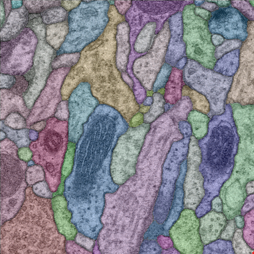

The Mutex Watershed and its Objective
Efficient, Parameter-Free Image Partitioning
Abstract: We propose an efficient algorithm for graph partitioning, the “Mutex Watershed”. Unlike seeded watershed, the algorithm can accommodate not only attractive but also repulsive cues, allowing it to find a previously unspecified number of segments without the need for explicit seeds or a tunable threshold. We also prove that this simple algorithm solves to global optimality an objective function that is intimately related to the multicut / correlation clustering integer linear programming formulation. The algorithm is deterministic, very simple to implement, and has empirically linearithmic complexity. When presented with short-range attractive and long-range repulsive cues from a deep neural network, the Mutex Watershed gives the best results currently known for the competitive ISBI 2012 EM segmentation benchmark.
The Algorithm and its Objective
We present a new watershed algorithm that, for the first time, uses attractive and repulsive interactions. Here, we will introduce the algorithm and give you an overview of the paper. If you are interested in our detailed theoretical analysis check out out TPAMI 2020 paper. In it, we show that this simple algorithm finds the global optimum of a meaningful objective function and show its relation to the Power-Watershed Framework, as well as the NP-hard multi cut problem.
Notation: The Mutex Watershed operates on an edge weighted graph \(\mathcal{G}=(V, E)\). Consider for example the graph in Figure 1. In contrast to the classical watershed, the graph weights/affinities \(w : E \rightarrow \mathbb{R}\), may be positive and negative. The higher this number, the higher the inclination of the two incident vertices to be assigned to the same cluster. Conversely, large negative affinity indicates a greater desire of the incident vertices to be in different clusters. We call an edge \(e \in E\) repulsive if \(w_{e}<0\) and we call it attractive if \(w_{e}>0\).
A watershed segmentation can be described as a set of attractive edges \(A^+\) that connect nodes and form clusters (bold green lines in Figure 1). In the classical watershed algorithm the number of clusters is defined by sets of seed nodes that may not be connected. Unfortunately, clustering with automated seed selection remains a fragile and error-fraught process, because every missed or hallucinated seed causes an under- or oversegmentation error. In this work, we replace seeds nodes with edges that introduce mutual exclusion constraints. In particular, we use a set of repulsive edges \(A^-\). If two clusters are connected via an edge in \(A^-\) merging these clusters is prohibited.
The Mutex Watershed Algorithm builds up \(A^+\) and \(A^-\) as follows:
- Sort all edges \(E\), attractive or repulsive, by their absolute weight in descending order into a priority queue.
- Iteratively pop all edges from the queue and add them to the active set one by one, provided that a set of conditions are satisfied. More specifically, if the next edge popped from the priority queue is attractive and its incident vertices are not yet connected, then connect the respective trees provided this is not ruled out by a mutual exclusion constraint. If on the other hand the edge popped is repulsive, and if its incident vertices are not yet in the same tree, then add a mutual exclusion constraint between the two trees.
We prove in our paper that the edge indicator \( x_e = \begin{cases} 0, &\text{ if } e \in A^+ \cup A^-\\ 1 &\text{ else } \end{cases} \) of the Mutex Watershed minimizes the objective $$ \min_{x \in \mathsf{SC}(\mathcal{G}, w)} \quad \sum_{e \in E} |w_e|^p \, x_e $$ where SC corresponds to the set of valid clusterings and \(p\) is chosen large enough. Furthermore we analyze it's theoretical scaling behavior and find that on our analyzed datasets it scales linearithmically with \(\mathcal{O}(E \log E)\)
Results on Neuron Segmentation Challenges
We evaluate the Mutex Watershed on the challenging task of neuron segmentation in electron microscopy (EM) image volumes. This application is of key interest in connectomics, a field of neuro-science that strives to reconstruct neural wiring digrams spanning complete central nervous systems. The task requires segmentation of neurons from electron microscopy images of neural tissue -- a challenging endeavor, since segmentation has to be based only on boundary information (cell membranes) and some of the boundaries are not very pronounced. Besides, cells contain membrane-bound organelles, which have to be suppressed in the segmentation. Some of the neuron protrusions are very thin, but all of those need to be preserved in the segmentation to arrive at the correct connectivity graph.
We estimate the affinities / edge for a graph with fixed neighborhood structure using a 3D-Unet (see Fig. 6 in our paper). This fixed neighborhood consists of a combination of local attractive and long-range repulsive edges.
Our method holds the top entry in the ISBI challenge leader board at the time of submission. This is especially remarkable insofar as it is simpler than the methods holding the other top entries (more details in section 5.2).
Update: Since these results were published, our method has become a part of two state-of-the-art segmentation pipelines by Hirsch, Mais, and Kainmueller [1] and Lee et al. [2]. The MWS has also been used for segmenting all 12,000 nuclei in an EM volume of Platynereis dumerilii, a model organism in evolutionary biology. The 8 TB EM data-set forms the reference volume for a joint morphology and gene expression atlas that allows to interrogate the relationship of genotypic and phenotypic development. The segmented nuclei form an essential part and need to be reconstructed faithfully, in order to correlate nuclear morphology and expression. The authors of [3] have found that MWS performs this task with high accuracy while still scaling to the large data-set (see Figure 3).
[1] Hirsch, Peter, Lisa Mais, and Dagmar Kainmueller. "PatchPerPix for Instance Segmentation." (2020)
[2] Lee, Kisuk, Ran Lu, Kyle Luther, and H. Sebastian Seung. "Learning Dense Voxel Embeddings for 3D Neuron Reconstruction." (2019)
[3] Vergara, Hernando M., Constantin Pape, Kimberly Meechan, Valentyna Zinchenko, Christel Genoud, Adrian A. Wanner, Benjamin Titze et al. "Whole-body integration of gene expression and single-cell morphology." (2020).
Figure 1: Interactive Mutex Watershed Example. Use the arrows to follow the MWS iterations. Edges are activated (solid lines) in order of absolute weight.
Figure 2: Mutex Watershed Results on ISBI
 Z-Position in Image VolumeMutex Watershed Segmentation
Figure 3: Nuclei segmentation with MWS in an EM volume of Platynereis dumerilii [3]. Zoom in for details.

Paper

The Mutex Watershed and its Objective:
Efficient, Parameter-Free Image Partitioning
Steffen Wolf*, Alberto Bailoni*, Constantin Pape, Nasim Rahaman,
Anna Kreshuk, Ullrich Köthe, Fred A. Hamprecht
In TPAMI, 2020
|
|
|
|
|
The Mutex Watershed:
Efficient, Parameter-Free Image Partitioning
Steffen Wolf*, Constantin Pape*, Alberto Bailoni, Nasim Rahaman,
Anna Kreshuk, Ullrich Köthe, Fred A. Hamprecht
In ECCV, 2018
|
|
|
|